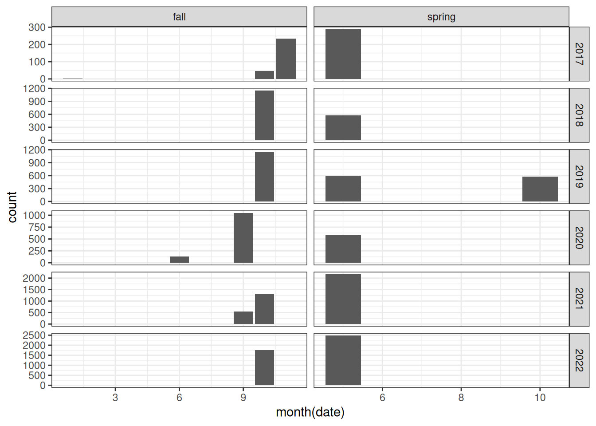
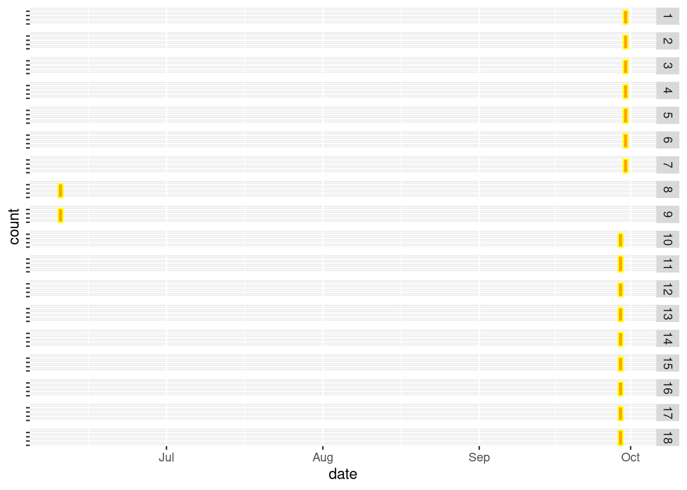
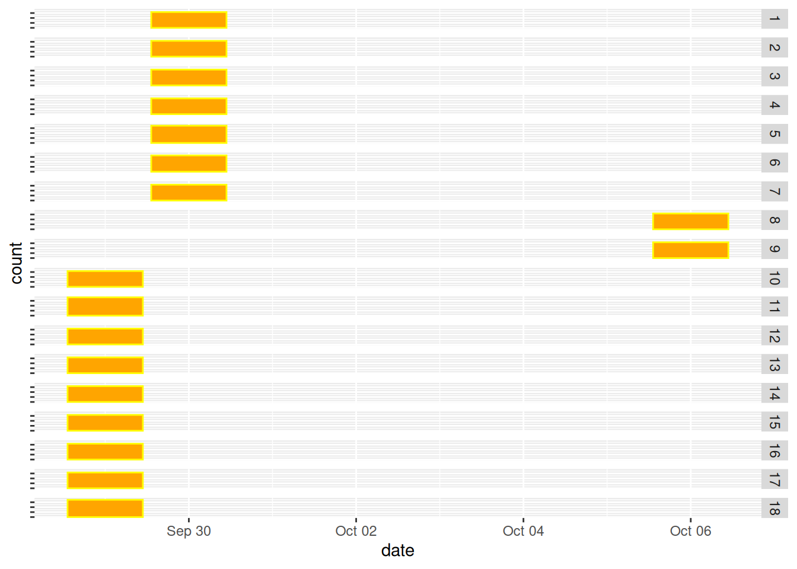
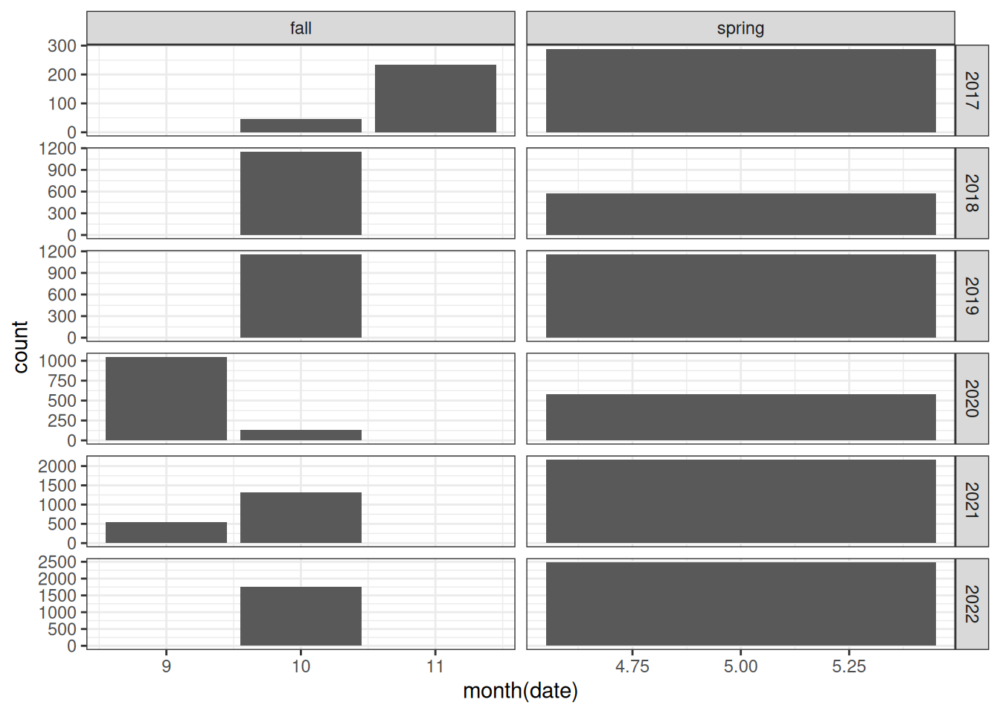
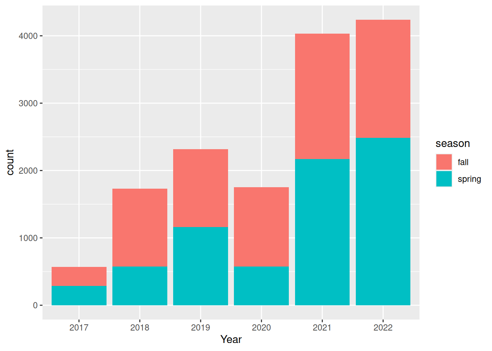
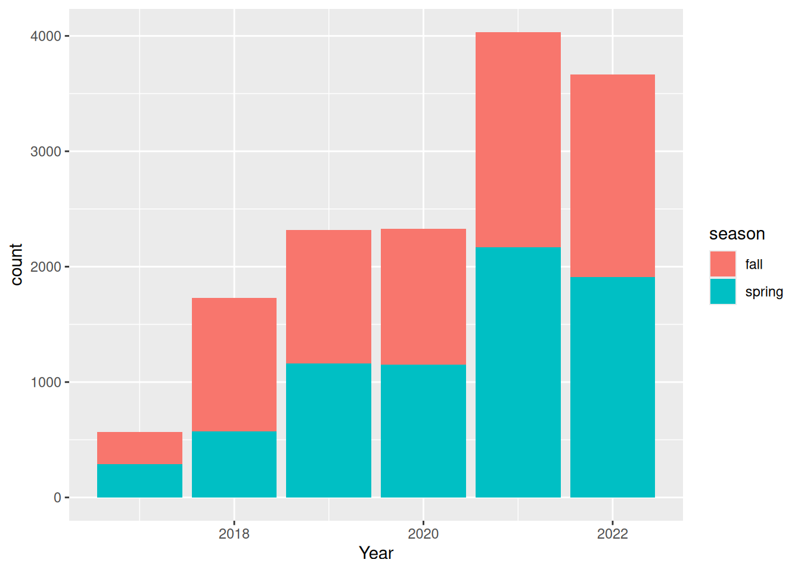
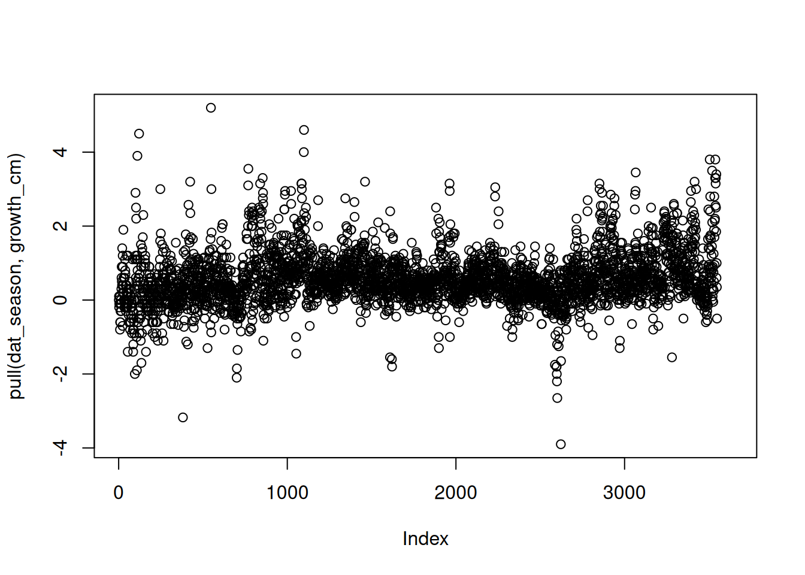
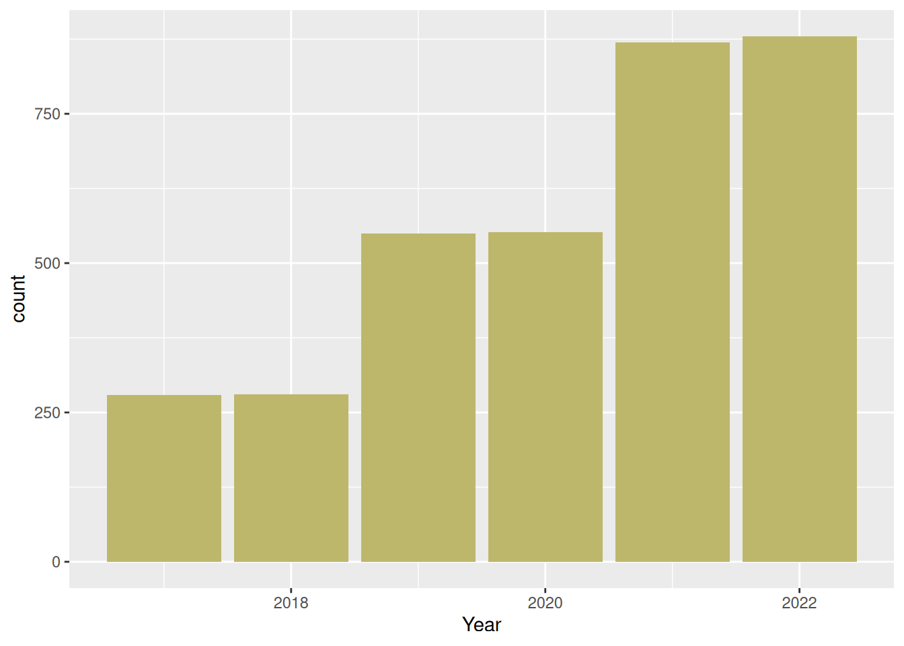
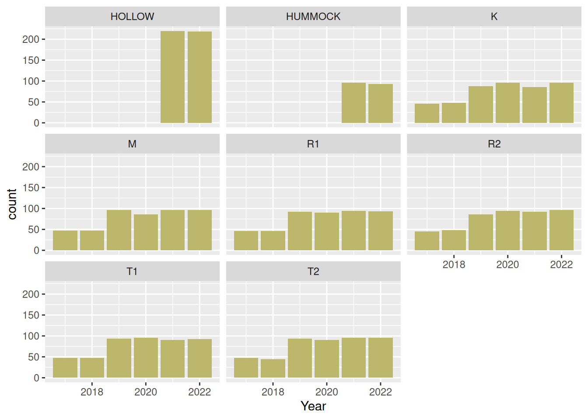
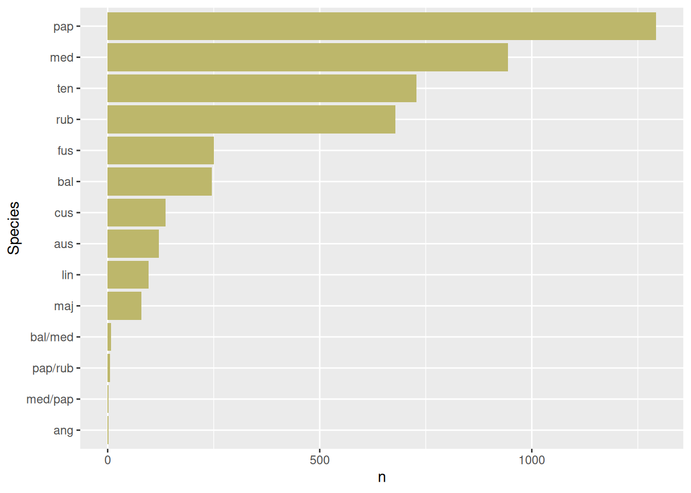

Load packages
library(tidyverse)
library(readxl)
library(DT)
library(ggplot2)
library(kableExtra)library(tidyverse)
library(readxl)
library(DT)
library(ggplot2)
library(kableExtra)The raw data set is in an xlsx format, located under data/. The data are split into different tabs based on year. Here I read the data; harmonise and join the tabs into one dataframe.
dat <- read_excel("data/growthData.xlsx",
sheet = "y2017") |>
# remove some measurements from October (FALL2).
# These were measured again in November
# along with the rest of the quadrats.
select(-DateFALL2,
-HeightFALL2,
-ObserverFALL2) |>
# adding a variable that keeps track of which tab the data comes from
add_column(tab_year = 2017) |>
bind_rows(
read_excel("data/growthData.xlsx",
sheet = "y2018") |>
mutate(DateFALL = as.Date(DateFALL, "%d.%m.%Y"),
tab_year = 2018)
) |>
bind_rows(
read_excel("data/growthData.xlsx",
sheet = "y2019") |>
mutate(
DateSUMMER = as.Date(DateSUMMER, "%d/%m/%Y"),
DateFALL = as.Date(DateFALL, "%d/%m/%y"),
tab_year = 2019)
) |>
bind_rows(
read_excel("data/growthData.xlsx",
sheet = "y2020") |>
mutate(DateSPRING = as.Date(DateSPRING, "%d/%m/%Y"),
tab_year = 2020)
) |>
bind_rows(
read_excel("data/growthData.xlsx",
sheet = "y2021") |>
# data had explicit NAs in cells that were read as text:
mutate(across(starts_with("Height"), as.numeric),
tab_year = 2021)
) |>
bind_rows(
read_excel("data/growthData.xlsx",
sheet = "y2022") |>
mutate(across(starts_with("Height"), as.numeric),
Plot_no = as.numeric(Plot_no),
Pin_no = as.numeric(Pin_no),
tab_year = 2022)
)There are some warnings when actual NAs (text) are converted to real NAs.
Here’s what the data looks like after I just row bind them:
DT::datatable(dat |> slice_sample(n = 10))I need to make this into a long format. There are multiple date and height columns that I want to combine. I will split the spring and fall data (ignoring the summer data) into separate sets, and then combine them again later.
# Spring data
dat_spring <- dat |>
select(-contains(c("FALL", "SUMMER", "diff"))) |>
pivot_longer(
cols = contains("Height"),
values_to = "Height_cm",
values_drop_na = T
) |>
separate_wider_delim(name,
delim = "_",
names = c("temp", "pinPosition"),
too_few = "align_start"
) |>
filter(str_detect(temp, "Rejected", negate = T)) |>
mutate(pinPosition = case_when(
is.na(pinPosition) ~ "single",
.default = pinPosition
)) |>
select(-temp) |>
add_column(season = "spring") |>
rename(date = DateSPRING)
# names(dat) [!names(dat) %in% names(dat_spring) ]
# unique(dat_spring$pinPosition)
dat_fall <- dat |>
select(-contains(c("SPRING", "SUMMER", "diff"))) |>
# introduces NA, where NA was originally as text
mutate(across(starts_with("Height"), as.numeric)) |>
pivot_longer(
cols = contains("Height"),
values_to = "Height_cm",
values_drop_na = T
) |>
separate_wider_delim(name,
delim = "_",
names = c("temp", "pinPosition"),
too_few = "align_start"
) |>
filter(str_detect(temp, "Rejected", negate = T)) |>
mutate(pinPosition = case_when(
is.na(pinPosition) ~ "single",
.default = pinPosition
)) |>
select(-temp) |>
add_column(season = "fall") |>
rename(date = DateFALL)
# A check looking into the warnings introduced when turning
# Height columns from characters to numeric. All fine.
# ch <- dat |>
# select(-contains(c("SPRING", "SUMMER", "diff"))) |>
# drop_na(HeightFALL) |>
# unite("link", c(ID, DateFALL))
# num <- dat |>
# select(-contains(c("SPRING", "SUMMER", "diff"))) |>
# mutate(across(starts_with("Height"), as.numeric)) |>
# drop_na(HeightFALL) |>
# unite("link", c(ID, DateFALL))
# ch |>
# filter(!link %in% num$link) |>
# View()
# Combining the two
dat_long <- dat_spring |>
bind_rows(dat_fall) |>
# merge comments and note columns
unite("Remarks",
contains(c("Comment", "Notes")),
sep = ". ",
na.rm = TRUE
) |>
# merge observer columns
unite("Observer",
contains("Observer"),
sep = ". ",
na.rm = TRUE
) |>
mutate(year = year(date))
rm(dat_fall, dat_spring)The long data is 14641 rows. Here is a random sample of 50 rows just to illustrate.
DT::datatable(dat_long |> slice_sample(n = 50))A closer look at the Treatment variable.
dat_long |>
count(Treatment)# A tibble: 10 × 2
Treatment n
<chr> <int>
1 EDGE 492
2 HOLLOW 1642
3 HUMMOCK 762
4 K 1888
5 M 2046
6 R1 1941
7 R2 1917
8 T1 1923
9 T2 1958
10 <NA> 72How can Treatment be NA? Turns out these are all new pins, and all from the fall. I end up deleting the rows for a different reason below.
Hollow and Hummock could perhaps be moved into a new column, called microtopography or something.
Are the dates entered correctly to match the seasons?
dat_long |>
ggplot() +
geom_bar(aes(x = month(date)))+
facet_grid(year(date)~season, scale ="free") +
theme_bw()
There are three weird things. 1) There are some fall measurements for 2020 that are placed in june. 2) Some spring measuremnts in 2019 are from October. 3) The x-axis in Figure 2.1 starts from 1, indicating there is same data recorded for January.
dat_long |>
mutate(year = year(date)) |>
filter(year == 2020,
season == "fall") |>
ggplot() +
geom_bar(aes(x = date),
color = "yellow",
fill = "orange")+
theme(axis.text.y = element_blank()) +
facet_grid(Plot_no~.)
dat_long |>
filter(Plot_no %in% c(8, 9),
season == "fall",
year(date) == 2020) |>
View()I will reverse these now. Figure 2.3 confirms that this has worked.
dat_long <- dat_long |>
mutate(date = case_when(
Plot_no %in% c(8,9) & date == date("2020-06-10") ~ date("2020-10-06"),
.default = date
))dat_long |>
mutate(year = year(date)) |>
filter(year == 2020,
season == "fall") |>
ggplot() +
geom_bar(aes(x = date),
color = "yellow",
fill = "orange")+
theme(axis.text.y = element_blank()) +
facet_grid(Plot_no~.)
Figure 2.1 show there were some errors with the dates in the spring of 2019.
dat_long |>
filter(year == 2019,
season == "spring") |>
mutate(month = month(date)) |>
group_by(date, month) |>
count()# A tibble: 2 × 3
# Groups: date, month [2]
date month n
<dttm> <dbl> <int>
1 2019-05-15 00:00:00 5 584
2 2019-10-05 00:00:00 10 576Here I will assume that it is only the month that is wrong. Fixing this now:
dat_long |>
mutate(date = case_when(
year == 2019 & date == date("2019-10-05") ~ date("2019-05-10"),
.default = date
)) |>
filter(year == 2019,
season == "spring") |>
mutate(month = month(date)) |>
group_by(date, month) |>
count()# A tibble: 2 × 3
# Groups: date, month [2]
date month n
<dttm> <dbl> <int>
1 2019-05-10 00:00:00 5 576
2 2019-05-15 00:00:00 5 584# OK
dat_long <- dat_long |>
mutate(date = case_when(
year == 2019 & date == date("2019-10-05") ~ date("2019-05-10"),
.default = date
))There is one observation taken before May, i.e. in winter. The observation is from January 2017.
dat_long |> filter(month(date) < 5)# A tibble: 1 × 14
ID Plot_no Pin_no Treatment date Observer Remarks tab_year
<chr> <dbl> <dbl> <chr> <dttm> <chr> <chr> <dbl>
1 10.14 10 14 M 2017-01-09 00:00:00 "" "" 2017
# ℹ 6 more variables: Species_W <chr>, Species_E <chr>, pinPosition <chr>,
# Height_cm <dbl>, season <chr>, year <dbl>The season is recorded as ‘fall’, so probably this is also just a matter of switching month and day.
dat_long <- dat_long |>
mutate(date = case_when(
month(date) < 5 ~ date("2019-09-01"),
.default = date
))Here is a remake of Figure 2.1 with date issues 1 - 3 sorted:
dat_long |>
ggplot() +
geom_bar(aes(x = month(date)))+
facet_grid(year(date)~season, scale ="free") +
theme_bw()
Thats better. All the spring measurements are from May, and the fall measurements are from months 9 - 11.
Looking into the intersection between year and season in Figure 2.5.
dat_long |>
ggplot() +
geom_bar(aes(
x = factor(year(date)),
fill = season)) +
labs(x = "Year")
I wonder why there are so few observation in spring 2020.
options(knitr.kable.NA = '')
dat_long |>
mutate(tab_year = paste0("tab_year", tab_year)) |>
group_by(tab_year, year) |>
count() |>
spread(year, n) |>
knitr::kable() |>
kable_paper(full_width = F)| tab_year | 2017 | 2018 | 2019 | 2020 | 2021 | 2022 |
|---|---|---|---|---|---|---|
| tab_year2017 | 570 | |||||
| tab_year2018 | 1729 | |||||
| tab_year2019 | 2316 | |||||
| tab_year2020 | 1752 | 576 | ||||
| tab_year2021 | 4034 | |||||
| tab_year2022 | 3664 |
Turns out some of the 2020 data (those added to the 2020 tab) was given the wrong date.
dat_long |>
mutate(date = case_when(
tab_year == 2020 & year == 2022 ~ date - years(2),
.default = date),
year = year(date))|>
mutate(tab_year = paste0("tab_year", tab_year)) |>
group_by(tab_year, year) |>
count() |>
spread(year, n) |>
knitr::kable() |>
kable_paper(full_width = F)| tab_year | 2017 | 2018 | 2019 | 2020 | 2021 | 2022 |
|---|---|---|---|---|---|---|
| tab_year2017 | 569 | 1 | ||||
| tab_year2018 | 1729 | |||||
| tab_year2019 | 2316 | |||||
| tab_year2020 | 2328 | |||||
| tab_year2021 | 4034 | |||||
| tab_year2022 | 3664 |
# OK
dat_long <- dat_long |>
mutate(date = case_when(
tab_year == 2020 & year == 2022 ~ date - years(2),
.default = date),
year = year(date))dat_long |>
ggplot() +
geom_bar(aes(
x = year,
fill = season)) +
labs(x = "Year")
The variable pinPosition indicates the position of duplicate pine measurements. The variable uses different short names, like V for venstre (left); E for east, single is there is just one measurement, etc. For example, E1 and E2 represents two measurement to the east of the pin, perhaps done just to confirm each other, or they can also be done my different field personnel. These can be averaged. Measurements at E1 and W1 (and E2 and W2) can also be averaged if one ones to look at Sphagnum groth in general, but there are cases where there are different species recorded for E and W. Therefore we keep these separate, and let the end user decided what to do.
dat_long |>
group_by(year, season) |>
count(pinPosition) |>
spread(pinPosition, n) |>
kable() |>
kable_paper()| year | season | E1 | E2 | H1 | H2 | single | V1 | V2 | W1 | W2 |
|---|---|---|---|---|---|---|---|---|---|---|
| 2017 | fall | 280 | ||||||||
| 2017 | spring | 289 | ||||||||
| 2018 | fall | 288 | 288 | 289 | 289 | |||||
| 2018 | spring | 287 | 288 | |||||||
| 2019 | fall | 289 | 289 | 1 | 289 | 289 | ||||
| 2019 | spring | 290 | 290 | 290 | 290 | |||||
| 2020 | fall | 300 | 288 | 300 | 288 | |||||
| 2020 | spring | 288 | 288 | 288 | 288 | |||||
| 2021 | fall | 467 | 466 | 467 | 466 | |||||
| 2021 | spring | 543 | 541 | 543 | 541 | |||||
| 2022 | fall | 439 | 441 | 437 | 439 | |||||
| 2022 | spring | 478 | 478 | 476 | 476 |
I want to combine E1 with E2, H1 with H2, etc.
In addition, in 2018 I want to combine all pinPositions. In 2018, V (venstre) can be made equivalent W (west) , and H is E.
dat_long |>
mutate(pinPosition2 = case_match(
pinPosition,
c("H1", "H2", "V1", "V2") ~ "single",
c("E1", "E2") ~ "E",
c("W1", "W2") ~ "W",
.default = pinPosition
)) |>
count(pinPosition2)
# OK. This variable can be aggregated across
dat_long <- dat_long |>
mutate(pinPosition2 = case_match(
pinPosition,
c("H1", "H2", "V1", "V2") ~ "single",
c("E1", "E2") ~ "E",
c("W1", "W2") ~ "W",
.default = pinPosition
)) Table 2.1 shows the number of data points for each combination of pin position and year. As we can see, duplicate measurements started in 2019.
dat_long |>
group_by(year, season) |>
count(pinPosition2) |>
spread(pinPosition2, n) |>
kbl() |>
kable_paper(full_width=F)| year | season | E | single | W |
|---|---|---|---|---|
| 2017 | fall | 280 | ||
| 2017 | spring | 289 | ||
| 2018 | fall | 1154 | ||
| 2018 | spring | 575 | ||
| 2019 | fall | 578 | 1 | 578 |
| 2019 | spring | 580 | 580 | |
| 2020 | fall | 588 | 588 | |
| 2020 | spring | 576 | 576 | |
| 2021 | fall | 933 | 933 | |
| 2021 | spring | 1084 | 1084 | |
| 2022 | fall | 880 | 876 | |
| 2022 | spring | 956 | 952 |
A closer look at the ID variable.
Here’s the time series for a single pin, measured from the west.
dat_long |>
filter(grepl("^8.14", ID),
pinPosition == "W2") |>
arrange(year) |>
select(ID, Remarks, year, season, Height_cm) |>
datatable()It appears the pin was replaced in the fall of 2019. I must assume that what is recorded there is the height of the new pin, and is therefore not comparable to the spring value that same year. The new annotation only last one time, i.e. it is not repeated the next season. In the spring of 2021 the wire seems to have been replaced again, and then again in the fall. In the spring of 2022 it was replaced a forth(?) time, according to the remarks. But this time the ID is unchanged.
Here are the suffices that are used:
dat_long |>
separate_wider_regex(ID,
c(ID_num = "\\d+.\\d++", text_in_ID = "\\w+"),
too_few = "align_start",
cols_remove = F) |>
count(text_in_ID)# A tibble: 5 × 2
text_in_ID n
<chr> <int>
1 NØ 2
2 SV 1
3 new 964
4 old 348
5 <NA> 13326I will split the ID column into a numerical ID_num, and a text_in_ID field that contains the suffix, if any (e.g. old or new). In the same go I remove those with direction (NØ or SV) in the ID. I don’t know what these are, and there is only 3 cases where this is the case.
dat_long <- dat_long|>
separate_wider_regex(ID,
c(ID_num = "\\d+.\\d++", text_in_ID = "\\w+"),
too_few = "align_start",
cols_remove = F) |>
filter(!text_in_ID %in% c("NØ", "SV"))I want to retain only one measurement per season, so that I can calculate one growth measurement per growing season.
Conclusion
I will calculate the growth per growing season, if and only if the spring and fall height are recorded on the same pin/wire. That means I can remove seasons where the fall measurements are done on new wires. There are also some IDs that have the suffix old. In these cases there should always be one measurement for the same date with the prefix new, meaning I can delete all old measurements from the spring heights. I can also remove those that are old in spring, because these will not have a comparable measurement the next fall. I thought I could also remove all those that are new in the fall, but turn out these could be labeled new in spring, and then that label is kept through that season (and reset again in the next season).
| Year | Season | ID | Intended action |
|---|---|---|---|
| 2020 | Fall | 8.14 | Keep |
| 2021 | Spring | 8.14 | Keep |
| 2021 | Fall | 8.14old | Keep |
| 2021 | Fall | 8.14new | Drop (use the ‘old’ pin. Confirm that it’s not a case of the ‘new’ suffix being wrongly repeated. Check that There is an ‘old’ measurement from the same date, and if not, that there is a ‘new’ measurement from the previous spring) |
| 2022 | Spring | 8.14new | Keep |
| 2022 | Fall | 8.14new | Keep |
| 2023 | Spring | 8.14old | Drop (‘old’ is only used if a pin is replaced, so there should also be a ‘new’ pin from the same date) |
Here is a view of the occurrences of old and new IDs.
dat_long <- dat_long |>
mutate(text_in_ID = case_when(
is.na(text_in_ID) ~ "-",
.default = text_in_ID
))
dat_long |>
group_by(year, season) |>
count(text_in_ID) |>
spread(text_in_ID, n) |>
select(-"-") |>
kbl() |>
kable_paper(full_width = F)| year | season | new | old |
|---|---|---|---|
| 2017 | fall | ||
| 2017 | spring | ||
| 2018 | fall | 36 | |
| 2018 | spring | ||
| 2019 | fall | 60 | 4 |
| 2019 | spring | 8 | 12 |
| 2020 | fall | 48 | 24 |
| 2020 | spring | 48 | |
| 2021 | fall | 400 | 4 |
| 2021 | spring | 412 | 256 |
| 2022 | fall | ||
| 2022 | spring |
First I create a link variable for the occurrences that I want to match against.
newInSpring <- dat_long |>
filter(season == "spring" & text_in_ID == "new") |>
mutate(link = paste(ID_num, tab_year, pinPosition, sep= "_")) |>
pull(link)
oldInFall <- dat_long |>
filter(season == "fall" & text_in_ID == "old") |>
mutate(link = paste(ID_num, tab_year+1, pinPosition, sep= "_")) |>
pull(link)
oldInSameFall <- dat_long |>
filter(season == "fall" & text_in_ID == "old") |>
mutate(link = paste(ID_num, tab_year, pinPosition, sep= "_")) |>
pull(link)Then I remove some records based on this link variable.
dat_long <- dat_long |>
mutate(link = paste(ID_num, tab_year, pinPosition, sep= "_")) |>
filter(
# Drop new fall measurements unless:
# - there is a new spring measurement, AND
# - there is no old measurement in the same fall
!(
text_in_ID == "new" &
season == "fall" &
(!link %in% newInSpring | link %in% oldInSameFall)
),
#drop all 'old' measurements from spring
!(
text_in_ID == "old" &
season == "spring"
)
) |>
select(-link)
dat_long |>
group_by(year, season) |>
count(text_in_ID) |>
spread(text_in_ID, n) |>
#select(-"-") |>
kbl() |>
kable_paper(full_width = F)| year | season | - | new | old |
|---|---|---|---|---|
| 2017 | fall | 279 | ||
| 2017 | spring | 287 | ||
| 2018 | fall | 1118 | ||
| 2018 | spring | 575 | ||
| 2019 | fall | 1093 | 8 | 4 |
| 2019 | spring | 1140 | 8 | |
| 2020 | fall | 1104 | 24 | |
| 2020 | spring | 1104 | ||
| 2021 | fall | 1462 | 400 | 4 |
| 2021 | spring | 1500 | 412 | |
| 2022 | fall | 1756 | ||
| 2022 | spring | 1908 |
Then I check the remarks and the ID history column for some ‘new’ fall measurements and make sure they should indeed be kept.
dat_long |>
filter(text_in_ID == "new" & season == "fall") |>
pull(Remarks)
# Ok
test <- dat_longx |>
filter(text_in_ID == "new" & season == "fall") |>
pull(ID_num)
dat_longx |> filter(ID_num %in% test[c(1, 10, 15)] & pinPosition == "W1") |> select(ID_num, season, text_in_ID, Remarks, year) |>View()
# Looks goodThere are some ID numbers that look a bit weird:
dat_long |>
filter(nchar(ID_num) > 5) |>
distinct(ID_num)# A tibble: 3 × 1
ID_num
<chr>
1 20.100000000000001
2 20.399999999999999
3 20.149999999999999This could bee an excel thing. ID_num is a character column. We can’t just convert it as numeric and round to two decimal points, because 1.1 and 1.10 would be the same. But we could round Pin_no and Plot_no and join these to recreate the ID column.
dat_long <- dat_long |>
mutate(
Pin_no_char = as.character(round(Pin_no, 0)),
Plot_no_char = as.character(round(Plot_no, 0))
) |>
unite(ID_char, c(Plot_no_char, Pin_no_char), sep = "_")
# check that no IDs are more then 5 characters
dat_long |>
filter(nchar(ID_char) > 5)# A tibble: 0 × 18
# ℹ 18 variables: ID_num <chr>, text_in_ID <chr>, ID <chr>, Plot_no <dbl>,
# Pin_no <dbl>, Treatment <chr>, date <dttm>, Observer <chr>, Remarks <chr>,
# tab_year <dbl>, Species_W <chr>, Species_E <chr>, pinPosition <chr>,
# Height_cm <dbl>, season <chr>, year <dbl>, pinPosition2 <chr>,
# ID_char <chr>Then I confirm there is only one measurement per season.
dat_long |>
group_by(ID_char, year, season, pinPosition, text_in_ID) |>
count() |> group_by(n) |> count()# A tibble: 1 × 2
# Groups: n [1]
n nn
<int> <int>
1 1 14186The Shapgnum species identities were recorded for each pin/wire from 2020 and onwards. There are 8 unique species, excluding dead. If the dataset were to be published on GBIF, one would need to spell out the species names and find a solution to the double species observations. I will just ignore that now and keep the species abbreviations.
#dat_long |>
# count(Species_W) |>
# datatable()
#
dat_long |>
count(Species_E) |>
datatable()dat_long <- dat_long |>
mutate(
Species_W = case_match(
Species_W,
"rub/pap" ~ "pap/rub",
c("med (bal)", "med/bal") ~ "bal/med",
.default = Species_W),
Species_E = case_match(
Species_E,
"rub/pap" ~ "pap/rub",
c("med (bal)", "med/bal") ~ "bal/med",
"pap/med" ~ "med/pap",
.default = Species_E)
)dat_long |>
group_by(year) |>
count(Species_W, Species_E) |>
ungroup() |>
#slice_head(n = 5) |>
DT::datatable()Species were recorded from year 2020.
The main response variable will be seasonal growth, from one spring to the following fall.
dat_season <- dat_long |>
pivot_wider(
id_cols = c(
ID_char,
Plot_no,
Pin_no,
pinPosition2,
Treatment,
year
),
names_from = season,
values_from = Height_cm,
values_fn = mean,
unused_fn = list(
Species_W = list,
Species_E = list,
date = list
)
) |>
mutate(growth_cm = spring - fall)
dat_season |>
pull(growth_cm) |>
plot()
dat_season |>
pull(growth_cm) |>
summary() Min. 1st Qu. Median Mean 3rd Qu. Max. NAs
-3.9000 0.1500 0.5000 0.5738 0.9000 5.2000 163 According to this, the peat grows 5 mm per season. But there are some of NAs. These arise when there is no measurement done for one of the seasons. Let’s look is there are any patterns in these NA’s.
dat_season |>
filter(is.na(growth_cm)) |>
group_by(year, Treatment) |>
count() |>
pivot_wider(names_from = Treatment, values_from = n) |>
kbl() |>
kable_paper()| year | K | M | R1 | R2 | T1 | T2 | EDGE | HOLLOW | HUMMOCK |
|---|---|---|---|---|---|---|---|---|---|
| 2017 | 2 | 1 | 2 | 2 | 1 | ||||
| 2018 | 1 | 2 | 1 | 4 | |||||
| 2019 | 8 | 1 | 4 | 10 | 2 | 2 | |||
| 2020 | 10 | 6 | 2 | 6 | |||||
| 2021 | 10 | 2 | 4 | 6 | |||||
| 2022 | 2 | 4 | 63 | 2 | 3 |
EDGE has a large number of NA’s in 2022. That is because the edge treatment was dropped.
There is no big increase over time (e.g. due to more wires being replaced).
The NA seem to be mostly random/evenly spread out
Let’s also look at the distribution of the actual data across Treatments and years (i.e. after removing the NA’s).
dat_season |>
filter(!is.na(growth_cm)) |>
group_by(year, Treatment) |>
count() |>
pivot_wider(names_from = Treatment, values_from = n) |>
kbl() |>
kable_paper()| year | K | M | R1 | R2 | T1 | T2 | EDGE | HOLLOW | HUMMOCK |
|---|---|---|---|---|---|---|---|---|---|
| 2017 | 46 | 47 | 46 | 45 | 47 | 48 | |||
| 2018 | 48 | 47 | 46 | 48 | 47 | 44 | |||
| 2019 | 88 | 96 | 92 | 86 | 94 | 94 | |||
| 2020 | 96 | 86 | 90 | 94 | 96 | 90 | |||
| 2021 | 86 | 96 | 94 | 92 | 90 | 96 | 64 | 220 | 96 |
| 2022 | 96 | 96 | 93 | 96 | 92 | 96 | 28 | 190 | 93 |
Edge, Hollow and hummocks are only included from 2021.
Removing the NA’s from the dataset:
dat_season <- dat_season |>
filter(!is.na(growth_cm))The species identities are preserved in the dataset as list columns, where one to four species names (abbreviations) are combined. It can be four records if there are two from spring (e.g. W1 and W2) and two from the fall. Usually the spesies will be the same, but there could have been a species turnover, or an inditification error.
I will first count the number of unique species names in the list columns, and then, if that returns a single species (which is not NA), I will extract the unique species name. If the species differed between the records, I will add NAs. Below is a proof of concept on a smaller sample of the data.
# draw a subset of data with four unique strata
temp <- dat_long |>
filter(ID_num %in% c(2.80, 3.80),
year == 2021)
temp <- temp |>
mutate(Species_W = case_when(
# In one strata I will add a second species
ID_num == 2.80 & season == "spring" & pinPosition == "W1" ~ "fake species",
# In the second strata I will add an NA
ID_num == 2.80 & season == "spring" & pinPosition == "E1" ~ NA,
# In the third strata will add all NAs
ID_num == 3.80 & pinPosition2 == "W" ~ NA,
# The fourth strata will have the same four species repeated
.default = Species_W
))
# Pivot wider, as I did above when I created dat_season
temp2 <- temp |>
pivot_wider(
id_cols = c(
ID_num,
Plot_no,
Pin_no,
pinPosition2,
Treatment,
year
),
names_from = season,
values_from = Height_cm,
values_fn = mean,
unused_fn = list(
Species_W = list,
Species_E = list,
date = list
)
) |>
mutate(growth_cm = spring - fall)
# Testing the method
temp2 |>
rowwise() |>
mutate(sameSpecies = length(unique(Species_W))<2,
species = case_when(
isTRUE(sameSpecies) ~ Species_W[[1]],
.default = NA
)) |>
select(ID_num,
pinPosition2,
Species_W,
sameSpecies,
species) |>
datatable()
# Looks OKdat_season <- dat_season |>
rowwise() |>
mutate(
sameSpecies_W = length(unique(Species_W))<2,
sameSpecies_E = length(unique(Species_E))<2,
species_W = case_when(
isTRUE(sameSpecies_W) ~ Species_W[[1]],
.default = NA),
species_E = case_when(
isTRUE(sameSpecies_E) ~ Species_E[[1]],
.default = NA)
)I’m pretty sure this has worked, since I tried in on the synthetic data. There are no examples if species turnover, so we can use the speciescolumn, and drop all the others.
table(dat_season$sameSpecies_E, useNA = "always")
TRUE <NA>
3475 0 table(dat_season$sameSpecies_W, useNA = "always")
TRUE <NA>
3475 0 Plot 28 should be Hollow (all the time). This was a data punching mistake. Also, plots 29 and 30 should be excluded all together. Those are the two Edge plots. The Edge treatment was discontinued.
dat_season <- dat_season |>
mutate(Treatment = case_when(
Plot_no == 28 ~ "HOLLOW",
.default = Treatment
)) |>
filter(!Plot_no %in% c(29,30)) |>
select(-Species_W,
-Species_E)I came across this case by chance. Let’s see it there are more cases like this. (This kind of problem can be avoided by having hierarchical datasets also for data field sheets and data punching).
Here is a little code to check for more than one treatment for the same plot ID.
(dups <- dat_season |>
group_by(Treatment) |>
count(ID_char) |>
ungroup() |>
group_by(ID_char) |>
count() |>
filter(n > 1) |>
pull(ID_char))character(0)There were none of these cases.
dat_season |>
ggplot() +
geom_bar(aes(
x = year),
fill = "darkkhaki") +
labs(x = "Year")
The distribution across years looks much better now.
dat_season |>
ggplot() +
geom_bar(aes(
x = year),
fill = "darkkhaki") +
labs(x = "Year") +
facet_wrap(.~Treatment)
The Edge treatment is now all gone.
dat_season |>
pivot_longer(
cols = starts_with("species"),
values_to = "Species"
) |>
filter(!is.na(Species),
Species != "NA",
Species != "dead") |>
count(Species) |>
arrange(n) |>
mutate(Species = fct_inorder(Species)) |>
ggplot() +
geom_col(aes(x = Species, y = n),
fill = "darkkhaki") +
coord_flip()
Shagnum papilosum, S. medium, S. tennuis and S. rubellum are the four most common species in the dataset.
dat_season |>
group_by(year, Treatment) |>
count() |>
pivot_wider(names_from = Treatment, values_from = n) |>
kbl() |>
kable_paper()| year | K | M | R1 | R2 | T1 | T2 | HOLLOW | HUMMOCK |
|---|---|---|---|---|---|---|---|---|
| 2017 | 46 | 47 | 46 | 45 | 47 | 48 | ||
| 2018 | 48 | 47 | 46 | 48 | 47 | 44 | ||
| 2019 | 88 | 96 | 92 | 86 | 94 | 94 | ||
| 2020 | 96 | 86 | 90 | 94 | 96 | 90 | ||
| 2021 | 86 | 96 | 94 | 92 | 90 | 96 | 220 | 96 |
| 2022 | 96 | 96 | 93 | 96 | 92 | 96 | 218 | 93 |
The distribution of data points across treatments now looks much better as well.
dat_analysis <- dat_season |>
select(ID = ID_char, plot = Plot_no, pin = Pin_no, Treatment, year, date, spring_height_cm = spring, fall_height_cm = fall, growth_cm, species_E, species_W)
glimpse(dat_analysis)Rows: 3,411
Columns: 11
Rowwise:
$ ID <chr> "1_1", "1_10", "1_11", "1_12", "1_13", "1_14", "1_15"…
$ plot <dbl> 1, 1, 1, 1, 1, 1, 1, 1, 1, 1, 1, 1, 1, 1, 1, 1, 2, 2,…
$ pin <dbl> 1, 10, 11, 12, 13, 14, 15, 16, 2, 3, 4, 5, 6, 7, 8, 9…
$ Treatment <chr> "R1", "R1", "R1", "R1", "R1", "R1", "R1", "R1", "R1",…
$ year <dbl> 2017, 2017, 2017, 2017, 2017, 2017, 2017, 2017, 2017,…
$ date <list> <2017-05-03, 2017-11-03>, <2017-05-03, 2017-11-03>, …
$ spring_height_cm <dbl> 13.0, 12.0, 12.7, 14.5, 12.4, 11.1, 12.5, 10.5, 15.6,…
$ fall_height_cm <dbl> 13.0, 11.9, 12.9, 14.6, 12.5, 11.0, 12.4, 11.3, 16.2,…
$ growth_cm <dbl> 0.0, 0.1, -0.2, -0.1, -0.1, 0.1, 0.1, -0.8, -0.6, -0.…
$ species_E <chr> NA, NA, NA, NA, NA, NA, NA, NA, NA, NA, NA, NA, NA, N…
$ species_W <chr> NA, NA, NA, NA, NA, NA, NA, NA, NA, NA, NA, NA, NA, N…arrow::write_parquet(dat_analysis, "data/dataset_cleaned.parquet")